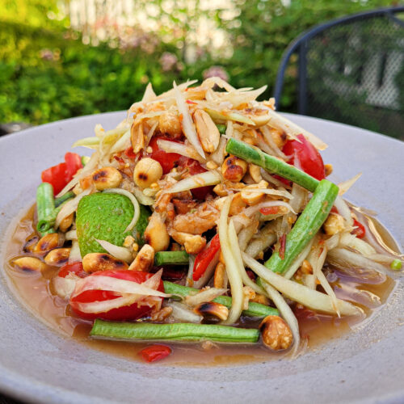

Papaya Salad

Description
This light and refreshing green papaya salad is both satisfying and healthy.
I love customizing it with extra chiles for added heat, but the beauty of this recipe is how easily it adapts to suit any taste!
Ingredients
- ¼ cup peanuts
- 2 Thai chiles, chopped
- 3 cloves garlic
- 1 tablespoon dried shrimp
- 1 tablespoon white sugar
- 2 medium limes, juiced
- 2 tablespoons fish sauce
- 1 medium green papaya - peeled, seeded, and sliced
- 1 cup cherry tomatoes, halved
- ¼ cup fresh green beans, cut into 1-inch pieces
- ½ medium carrot, peeled and shredded
- salt and ground black pepper to taste
Steps
- Preheat the oven to 350 degrees F (175 degrees C). Place peanuts on a baking sheet.
- Toast in the preheated oven until fragrant and golden, 7 to 8 minutes. Let cool for 5 minutes.
- Grind peanuts, Thai chilies, garlic, dried shrimp, and sugar in a mortar and pestle, or food processor. Stir lime juice and fish sauce together in a small bowl to make dressing.
- Toss papaya, tomatoes, green beans, and carrot with dressing. Season with salt and pepper.
Home